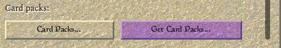
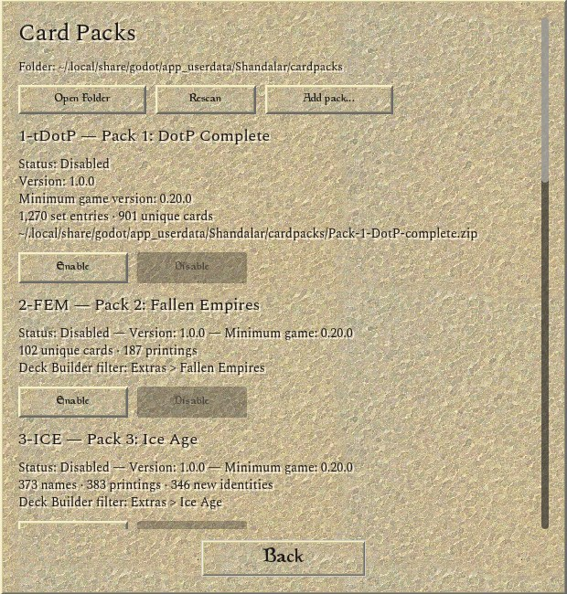

Card pictures can't come with the game, because they aren't ours to hand out. So the game downloads them itself, from Scryfall, onto your own computer. The packs that add the later sets are made the same way, because they carry those sets' pictures. Pick your computer in the bar above and this page shows only your steps. For an iPad or a web browser, see iPad and web play further down.
-
1
Download the game
Open the downloads page. Under Assets, click the file for your computer that ends in -with-skin.zip. That one has the original look and sounds.
- Shandalar-…-linux64.zip
- Shandalar-…-linux64-with-skin.zipThis one
- Shandalar-…-macos.zip
- Shandalar-…-macos-with-skin.zipThis one
- Shandalar-…-windows64.zip
- Shandalar-…-windows64-with-skin.zipThis one
The … is the version number, which goes up with every release. The macos download runs on both Apple Silicon and Intel Macs. -
2
Unzip it and find the game folder
Right-click the zip and choose Extract All…, then Extract. The game won't run from inside the zip.
Double-click the zip. A folder appears next to it.
Right-click the zip and choose Extract Here.
Move the folder somewhere easy to find, such as Documents. The game folder is the one with Shandalar.exeShandalar.apprun.sh in it.
Windows makes a folder named after the zip and puts the game folder inside it. Go one folder deeper.
- cards
- decks
- packaging
- skin
- tools
- README.txt
- run.sh
- Shandalar.exe
- Shandalar.app
- Shandalar.pck
- Shandalar.x86_64
The game folder (a few more files are in it too). -
3
Start it once
Double-click Shandalar.exe. The first time, Windows may warn you, because the game isn't signed by a company. Click More info, then Run anyway.
Click More info
Windows protected your PCMicrosoft Defender SmartScreen prevented an unrecognized app from starting.
More infoDon't runClick Run anyway
Windows protected your PCApp: Shandalar.exe
Publisher: Unknown publisherRun anywayDon't runDouble-click Shandalar.app. The first time, macOS stops it because the game isn't from the App Store. Close the message, then let it through once in System Settings.
Close the message
“Shandalar” Not OpenedApple could not verify “Shandalar”…DoneMove to TrashOpen System Settings → Privacy & Security, scroll down, click Open Anyway
“Shandalar” was blocked to protect your Mac.Open AnywayOlder macOS versions word these a little differently, but the Open Anyway button is in the same place.
Double-click run.sh (if your file manager asks, choose Run), or start it from a terminal with
./run.sh.You'll see the main menu. You can already play the 897 original cards; they just have no pictures yet. Leave the game open for the next step.
-
4
Get the card pictures and the card sets Key step
In the main menu click Options, scroll down to Card packs and click the purple Get Card Packs... button. Tick what you want and press OK. The game does the rest.
Under Card packs in Options, click the purple button

Tick the 1997 card pictures and every pack you want, then press OK
- 1997 card pictures
- Pack 1: DotP Complete
- Pack 2: Fallen Empires
- Pack 3: Ice Age
- … and so on, to Pack 10: The Urza Block
OKStopCloseThe 1997 card pictures put a picture on each of the 897 original cards. Packs 1 to 10 add the later sets, up to the Urza block, with their pictures. The window says how much each one downloads and how much free space it needs.
Now wait. Everything together is about 1 GB to download and takes about half an hour: the pictures come from Scryfall, one at a time, at a pace that is kind to its servers. A bar shows how far it is and how much time is left. You can use your computer meanwhile.
Stopped early, or the connection dropped? Nothing is lost. Open Get Card Packs... again, tick the same packs and press OK: what was already downloaded is kept, and it goes on from there.
At the end the window lists what was installed. The game keeps the finished zip files in its own card folder; you don't have to move, unzip or rename anything.
No purple button? It comes with version 0.70.11 or later. The version number is in the bottom right corner of the main menu. On an older version, download the newest one (step 1), or use the other way below.The other way: the Python tools
The game folder has a tools folder with small programs that make the very same zip files from a command window. They need Python 3.10 or newer (free, from python.org). You only need them on an older version of the game, or if you like the command line.
The commands for each pack, and where the zip files go, are in the card art and packs guide. Then go on with step 5 here.
-
5
Switch the packs on
In Options, click Card Packs... (beside the purple button), and click Enable under each pack.

Rescan finds new zipsClick Enable under each pack, and scroll down for the rest. Newer versions also have an Add pack... button at the top, for a pack zip made on another computer. The card pictures need nothing more: they show by themselves, at the latest after the next start of the game. If a pack is missing from the list, click Rescan.
-
6
Play
Magic Battle starts a duel against the computer: pick a deck for each seat and click Go! Shandalar starts the adventure.
To play with the new sets, make a deck that uses them:
- Deck Builder
- Extras
- switch on the sets
- Deck → AutoDeck
- Deck → Save deck
- Done
Extras picks which sets the Deck Builder shows: 1997 at its top shows the original cards alone, All switches every set on (or, when all are on, off), and each set's Only shows that set alone. AutoDeck, the gold line at the top of the Deck menu, builds a deck for you from the sets and colors you choose; you can also build one card by card. Then pick your deck in Magic Battle.
Rather play with a controller? From version 0.70.11 the whole game answers one: the left stick moves the pointer, A presses, B closes or goes back, and the D-pad walks your hero on the adventure map and jumps from button to button in menus. Options → Controls shows every button and lets you change it. With no controller connected, nothing changes.
iPad and web play
The game also runs in a web browser, and so on an iPad, with no app store. It works like a small website of your own: you put the game's web download on a web host, open its address in Safari on the iPad, and add it to the Home Screen. From then on it has its own icon, opens full screen and can play without a connection.
-
1
Download the web version
On the downloads page, under Assets, take the file that ends in -web-offline.zip, and unzip it on your computer.
- Shandalar-…-web-offline.zipThis one
- Shandalar-…-web-offline-with-skin.zip
- Shandalar-…-web.zip
- Shandalar-…-web-threaded.zip
The web downloads. Each kind comes plain and as -with-skin. - web-offline is the one for an iPad: it saves the game on the iPad, so it starts without a connection.
- web-offline-with-skin is the same with the 1997 look already inside, for your own play. Use it on a host that only you and your household use.
- web is the same game without the offline saving: it plays only while the iPad can reach your host.
- web-threaded needs a specially set up web server. Skip it.
The unzipped folder is a complete little website:
index.htmland the game's files beside it. Keep them all together. -
2
Try it on your computer first
A browser plays the game only from a web address. Double-clicking
index.htmlshows an error, or nothing. One line turns your computer into a tiny web server for a test.It needs Python, which is free. Get it from python.org/downloads and keep the default choices.You very likely have it already. Then open a command window in the unzipped web folder:
Open the folder in File Explorer, click the address bar at the top, type cmd and press Enter.
Open Terminal (in Applications → Utilities), type cd and a space, drag the folder from Finder onto the window, and press Enter.
Right-click an empty spot inside the folder and choose Open in Terminal.
Type this line and press Enter:
> py -3 -m http.server 8000
$ python3 -m http.server 8000
Now open
http://localhost:8000/in the browser on that same computer. The game's main menu appears. To stop the server, close the command window.This address is only for the computer itself. An iPad can't use it, and it can't use your computer's home network address (one likehttp://192.168.…) either: browsers run the game only from an address that starts with https://. The one exception islocalhost, on the computer that runs the server. -
3
Put the folder on a web host Key step
Upload the whole unzipped folder, as it is, to a web host of your own. Any host that serves plain files will do: the game needs no database, no login and no programs on the server.
What must be true of the host:
- Its address starts with https://.
- The game has a folder of its own there, and every file of the download is in it, unchanged.
- The address stays the same. Everything the iPad keeps (step 5 and after) belongs to that one address.
- It hands out files as they are. Most hosts do. If yours has settings for it:
.wasmfiles go out asapplication/wasm, a missing file is not answered withindex.html, andoffline-sw.jsis not cached by the host (Cache-Control: no-cache).
No special security headers are needed for web-offline and web. (Only the web-threaded download needs them, which is why this guide skips it.)
A server in your own home works as well, as long as it gives the game an https:// address. Whichever you use, remember the box at the top of this chapter: a download with the skin only on a host for you and your household, and card pictures never where other people can reach them.
-
4
Open it on the iPad and add it to the Home Screen
On the iPad, open Safari and go to your host's https:// address. The main menu appears, just as on the computer.
Now give it an icon: tap Safari's Share button, then Add to Home Screen. If you see an Open as Web App switch, leave it on. The game's own icon lands on the Home Screen. The wording may differ slightly between iPadOS versions.
From now on, always start the game from that icon. It opens full screen, without Safari's bars, and turned sideways (landscape), the way the table is laid out. The icon keeps its own skin, decks and saves, apart from what a Safari tab keeps; so set everything up in the game you opened from the icon.
-
5
Let it save itself for offline play
Open the game from its icon while the iPad is still connected, and leave it open for a few minutes. In the background it saves its files on the iPad: about 50 MB, or about 130 MB with the skin.
Nothing on the screen says when this is finished, and seeing the main menu does not mean it is. So test it: close the game completely, switch on Airplane Mode, and open the icon again. If the main menu comes and a duel starts, the iPad has everything, and your host no longer needs to be reachable. If not, reconnect, open the game and give it more time.
A new version. The iPad gets new versions from your host, not from the downloads page. Download the new web-offline zip, unzip it, and replace the files on your host, all of them together, at the same address. The next time the game is opened with a connection, it fetches the new version in the background. Close the game completely and open it again, and the new one starts. The version number is in the bottom right corner of the main menu. Your decks, saves, skin and card pictures stay.
Starting clean. Clearing the website data for your host's address in the iPad's Safari settings removes the saved game and everything else it kept there: skin, card pictures, decks and adventures. Export your adventures first (step 7).
-
6
Add the 1997 look and the card pictures
Without them the game draws clean panels of its own and plain cards, and plays the same. To add them you need two zip files on the iPad, then Options → Skin → Choose...
- The skin:
original_skin.zip, a download of its own on the downloads page, or the skin zip you made on your computer from your own 1997 game. - The card pictures:
cardart.zip. Make it on your computer with Get Card Packs... (step 4 at the top of this page; tick 1997 card pictures). It is then in the game's card folder: Options → Card Packs... → Open Folder shows it.
Copy both to the iPad, into the Files app, any way you like. In the game on the iPad, open Options; under Skin there is a Choose... button for the skin and one for the card art. Tap it, pick the zip, and wait until the game has read it in; the files are large (about 110 MB and 190 MB). Restart the game when it offers to. The game keeps its own copy, so the zips in Files can go afterwards, but keep them somewhere: you'll need them again if the iPad ever clears the game's data.
Forget my zips, under Skin, removes the zips you added.
The browser version plays the 897 original cards. The numbered packs with the later sets can't be added to it; they are for the computer and handheld versions.
On a host only you and your household use: the zips beside the game
There, the two zips may sit on the host instead: as
skin/original_skin.zipandskin/cardart.zipin the game's folder, besideindex.html. The game fetches them by itself and keeps them. For the web-offline download, runpy -3 tools/package_web_offline.py --refresh .python3 tools/package_web_offline.py --refresh .in the folder after adding or changing a zip and before uploading, so the offline copy includes it. Never put card pictures on an address other people can reach. - The skin:
-
7
Look after your saves
In a browser there are no folders. Your adventures, decks, options, skin and card pictures live in the browser's own storage for your host's address, on that one iPad.
That storage is not a safe place for the only copy. Clearing website data deletes it, an iPad that runs low on space may clear it by itself, and a Home Screen icon is not a backup. So now and then, and always before you clear anything or move the game to a new address:
Open Save / Load in the main menu, highlight a save of the adventure and press Export. The whole adventure, every save of it, downloads as one file. Import on the same screen brings it back, on this iPad or on any computer with the same version of the game or a newer one.
A duel that is under way is not kept when the game is closed. Finish it, or give it up, first.
-
8
What is different on an iPad
- You play by finger. A tap is a click. Hold, then lift, is a right-click. Drag to drag, swipe to scroll a list, and tap the large card to see it full screen. Options → Display → Touch controls is Auto, On or Off; leave it on Auto.
- No keyboard, mouse or controller is needed. Touch always works, and text fields bring up an on-screen keyboard. A controller paired with the iPad should act as it does on other devices; this has not been tested on an iPad.
- Hold the iPad sideways. The table is laid out for landscape.
- The 897 original cards, the adventure, duels, the Deck Builder and Booster Draft are all there.
- Not in the browser: games over the local network (Host on LAN, Find LAN games), Get Card Packs..., Build from a 1997 install..., the numbered card packs, the adventure plugins that come with the computer downloads, and anything that opens a folder.
The same steps work for an Android tablet or any computer's browser: open the address, and choose Install app or Add to Home Screen where the browser offers it.
If something goes wrong on the iPad
A white or empty page, or an error instead of the game
Check the address: it must start with https:// (step 3). A file opened from the Files app, or an http:// address of a computer on your home network, does not run the game. Check that every file of the download is on the host, in one folder. Then give it a moment: the first load fetches the whole game. The game needs a browser with WebGL 2, which very old iPads lack.
The old version still shows after an update
Open the game with a connection and leave it open for a few minutes, then close it completely (swipe it away in the app switcher, and close any Safari tab that has it open) and open it again. A new version waits until no window of the old one is open. Also check that all the new files went to the host together, at the same address.
It says to reconnect, or it won't start without a connection
The offline copy is incomplete: it wasn't finished, or the iPad cleared part of it. Connect, open the game and leave it open until it has fetched the files again, then close it completely and reopen. Your saves are kept apart from the game's files and are not touched by this.
The skin, the card pictures or my saves are gone
The iPad cleared the game's storage: it was full, or website data was cleared. Make room, then add the zips again (step 6) and Import your exported adventures (step 7). If you started the game from a Safari tab instead of the icon, nothing is lost: the two keep separate storage, so open it the way you did before.
Nothing is kept from one visit to the next
Don't use Private Browsing: it forgets everything when the tab closes. Use the Home Screen icon.
Choosing a zip seems to do nothing
Large zips take a while to read in; a line under the buttons says how far it is. Only a skin zip and a card art zip are taken; a numbered pack zip is refused.